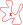

Generative Deep Neural Models
Agenda
- Discriminative VS Generative models
- Definition
- Embedding-space / manifold hypothesis
- Generative approaches
- Variational Autoencoders
- Normalizing Flows
- Diffusion Models
- Generative Adversarial Networks
- Performances
- New Generative opportunities
- Manipulation of high-level features / style
- Generating missing information / brand-new data
- Conclusions
Discriminative models

Generative models

Discriminative VS Generative

Partition VS fit
Manifold hypothesis

Embedding space
on a lower-dimensional (embedding) space
keeping (and disentangling) the latent characteristics.
Generative approaches

Variational Auto-Encoders
Normalizing Flows
Being $\{f_i\}_{i=1}^n \ni f_i: \mathcal{Z}_i\in\Re^d \to \mathcal{Z}_{i+1}\Re^d$ diffeomorphisms: $$p_{\mathcal{Z}_i}(z_i)=p_{\mathcal{Z}_{i+1}}(f_i(z_i))|\det Jf_i(z_i)|$$

$$x = z_0 \rightarrow f_1(z_0) = z_1 \rightarrow \cdots \rightarrow f_n(z_{n-1}) = z_n$$
$$x = z_0 = f_1^{-1}(z_1) \leftarrow \cdots \leftarrow z_{n-1} = f_n^{-1}(z_n)$$

Denoising Diffusion Probabilistic Models
Generative Adversarial Networks
Train just the generator part $G$...
 $$\small
\begin{eqnarray}
\mathcal{V}(G,D)&=&\min_G\max_D
\mathbb{E}_x\left[\log D(x)\right] \\
&+& \mathbb[E]_z\left[\log(1-D(G(z)))\right]
\end{eqnarray}
$$
$$\small
\begin{eqnarray}
\mathcal{V}(G,D)&=&\min_G\max_D
\mathbb{E}_x\left[\log D(x)\right] \\
&+& \mathbb[E]_z\left[\log(1-D(G(z)))\right]
\end{eqnarray}
$$